Creator's Statement创作者陈述
Games have always been how I stay close to friends: Flash multiplayer games, then LAN co-op, then online worlds. They give us a shared identity in another world and a break from everyday pressure. This project treats a game as a social tool — an MMORPG where puzzles, co-operation and character growth all pull players into playing together.
对我来说，游戏一直是和朋友保持联系的方式：从 Flash 多人小游戏，到局域网合作，再到网络游戏。它让我们在另一个世界里有共同的身份，也能暂时放下日常的压力。这个项目就是把游戏当作社交工具：一个用解谜、合作和角色成长把玩家拉到一起玩的 MMORPG。
I had played The Witcher 3 for 200 hours and was drawn in by its story and world, which made it a strong theme for a game. I had also been developing Minecraft servers since middle school. Before I knew Unity or any other engine, Minecraft was the platform where I could actually build it.
我自己玩了 200 小时《巫师 3》，被它的剧情和世界观深深吸引，觉得这是很好的游戏题材。我从初中就开始做 Minecraft 服务器开发。那时我还不会 Unity 等引擎，Minecraft 就是我能真正把这个游戏做出来的平台。
Research & References调研与参考
Reference games参考游戏
The team studied many games. MMOs such as World of Warcraft were the main reference for group play, class roles and boss mechanics; The Witcher 3 set the world and tone.
团队调研了很多游戏。《魔兽世界》等 MMO 是组队玩法、职业定位和 Boss 机制的主要参考，《巫师 3》决定了世界观和基调。
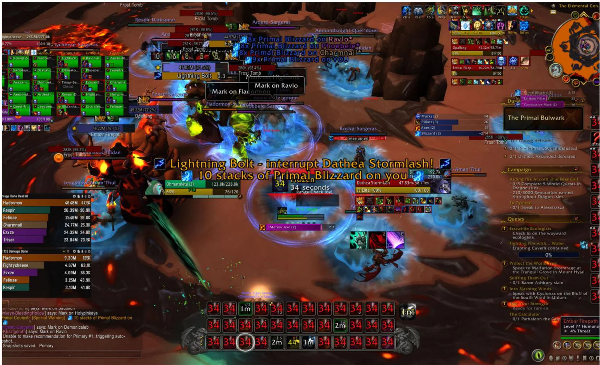
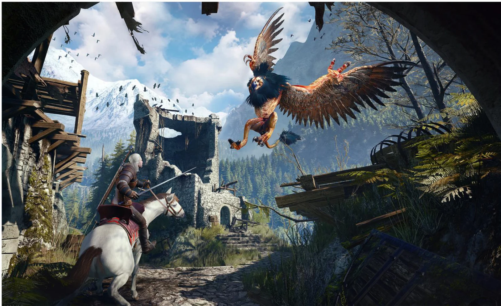
Level-design theory关卡设计理论
Early on I could not say what makes a level well designed. Reading level-design theory showed that simple devices matter most: obstacles that hide the goal and secondary paths that give the layout a second route.
一开始我说不清什么样的关卡算好。读了关卡设计理论之后才明白，最普通的手段反而最关键：挡住目标的障碍物，和给布局多一条路线的支线路径。
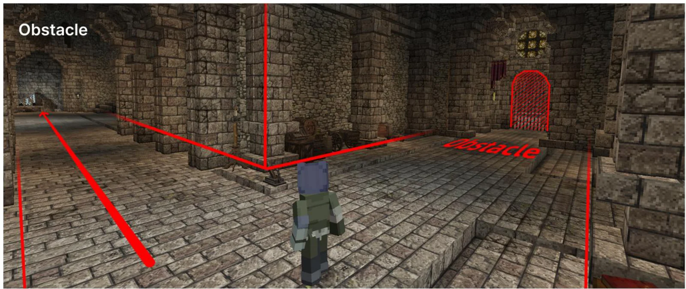
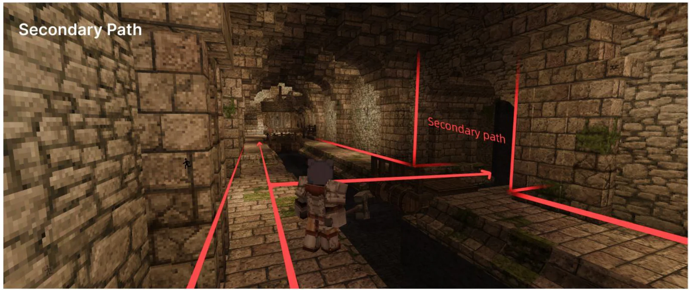
Proposal立项提案
- Goal — systems that satisfy both an MMORPG and an ARPG, so social play and combat support each other.目标：系统同时满足 MMORPG 和 ARPG 的需求，让社交和战斗互相支撑。
- Pillars — social interaction, puzzles, co-operation, character development.支柱：社交互动、解谜、合作、角色成长。
- Combat — action-RPG combat on top of vanilla Minecraft.战斗：在原版 Minecraft 上做动作 RPG 战斗。
- Group play — class roles built so dungeons need a team.组队：职业定位让副本必须组队。
I started the project, and later founded Wuhan Chakabei Game Technology to develop and run it as the company's product.
项目由我发起，之后专门成立武汉茶卡贝游戏科技有限公司，把它作为公司产品来开发和运营。
Ideation & Prototype构思与原型
The first prototype recreated Witcher 3-style dialogue features inside Minecraft.
第一个原型是在 Minecraft 里复刻《巫师 3》式对话的系统功能。
The first version was planned as five groups of systems, each expanded into connected features: character & item management, combat & interaction, quest & exploration, social & multiplayer, and interface & utility. Some systems were planned for social play from day one; others appeared when development exposed a need.
第一个版本按五类系统规划，每类再展开成互相关联的功能：角色与物品管理、战斗与交互、任务与探索、社交与多人、界面与工具。有些系统从一开始就是为社交设计的，另一些是开发中发现需要才加的。
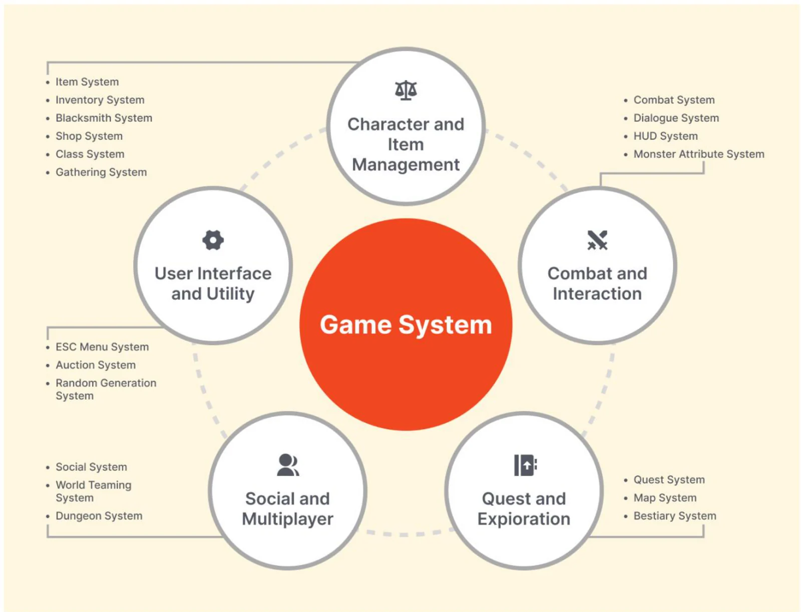
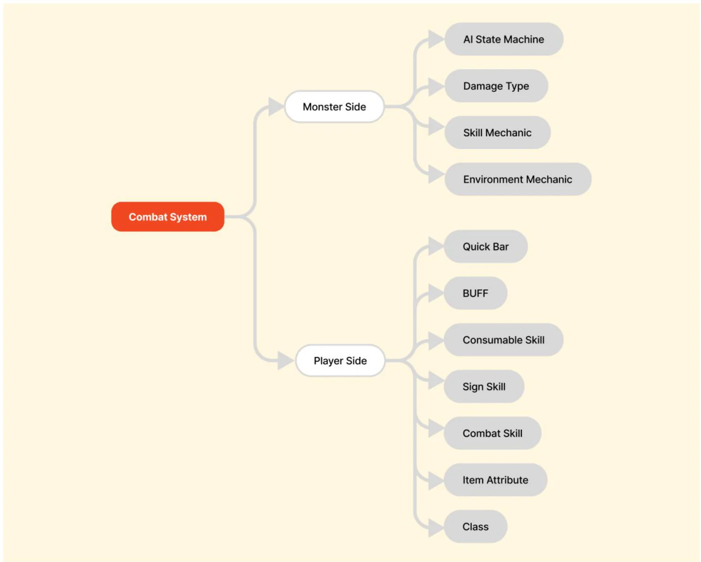
As lead programmer I built the base the rest of the game stands on: damage resolution and the damage formula as the single entry point for skills, gear and potions; item types and inventory storage; and potion and item crafting with recipe data kept apart from logic so designers can add content on their own.
作为主程，我先搭了整个游戏依赖的底层：伤害判定和伤害公式，作为技能、装备、药水数值的统一结算入口；道具种类和背包存储；药水与道具合成，配方数据和逻辑分离，策划可以自己填内容。
Preproduction前期制作
Quests and items任务与物品
Quests were split into what the player sees and what the data holds. Testing showed quest information was critical, so it appears in both the inventory screen and the HUD for accepting and tracking.
任务拆成两部分：玩家看到的信息，和背后的数据。测试发现任务信息对体验非常关键，所以在背包界面和 HUD 两处都显示接取和进度。
Items started from real objects: each was broken down into attributes such as weight, price, type, quality and name, then turned into one tooltip format that adapts to any item category added later.
物品从现实中的物件出发：先拆出重量、价格、类型、品质、名称等属性，再做成一套能适配以后任何新物品类型的描述格式。
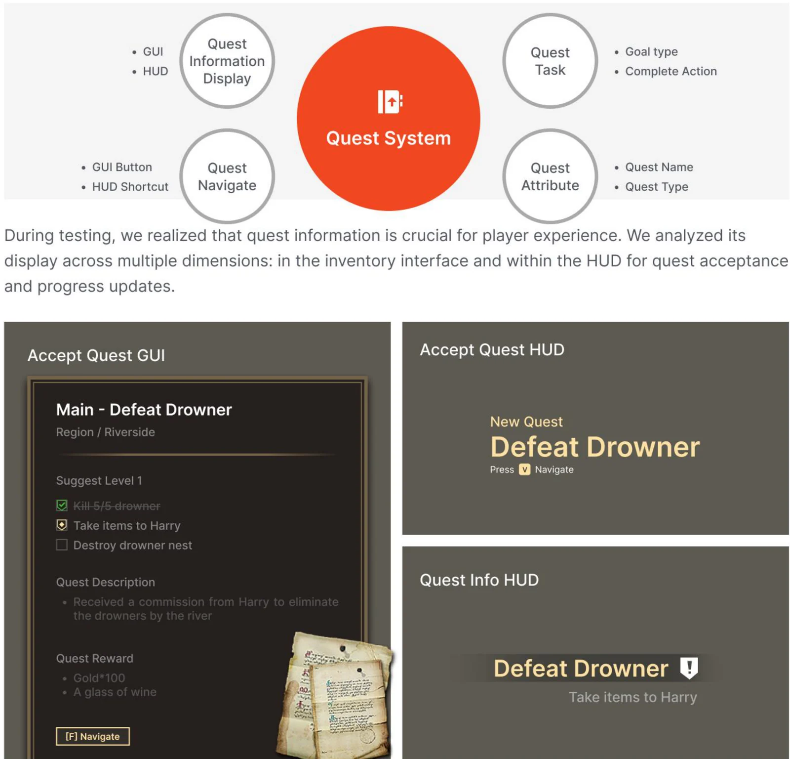
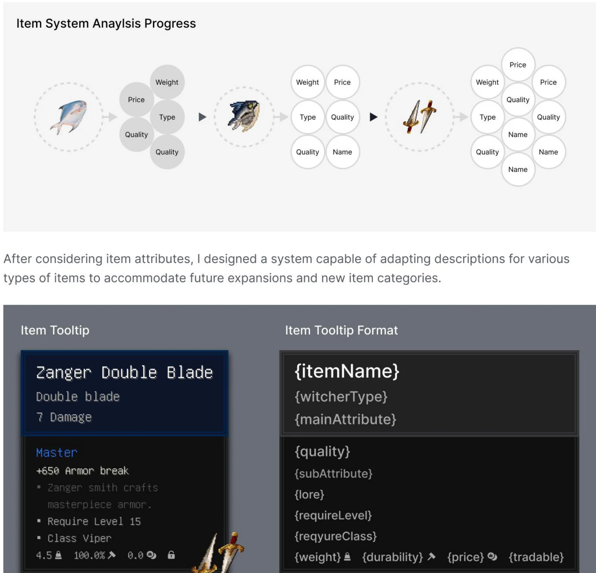
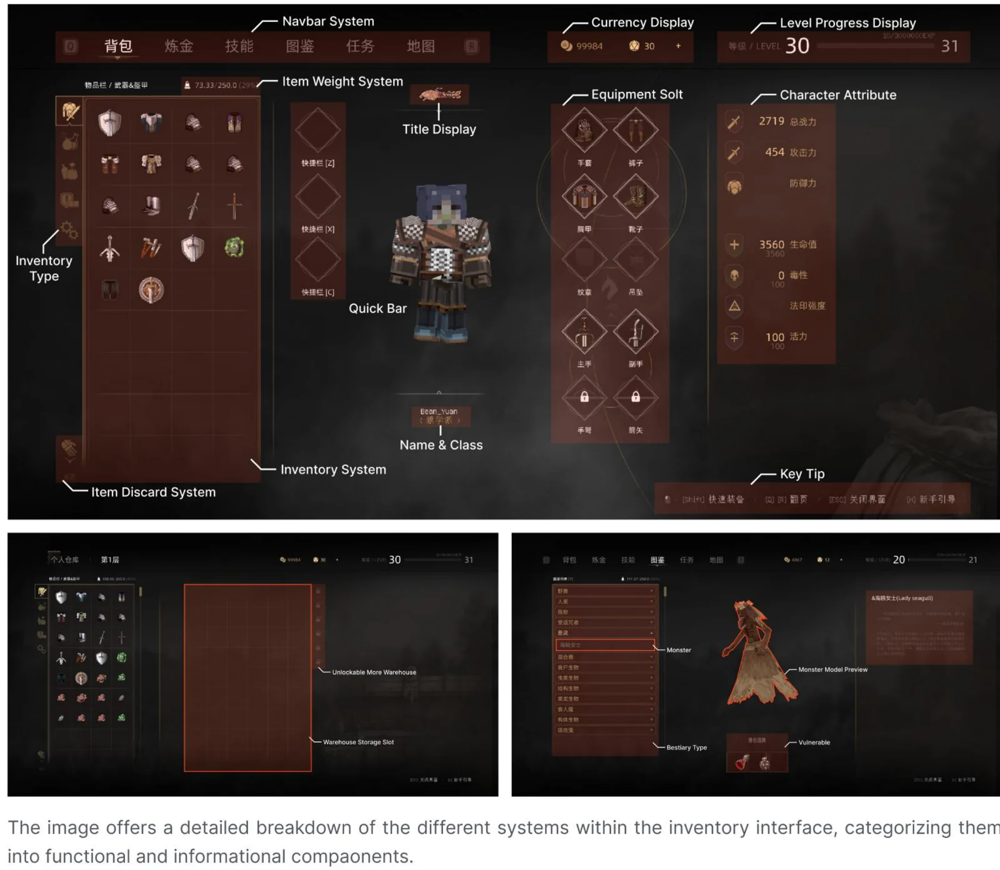
Classes and numbers职业与数值
Five classes sit on the tank / healer / damage-dealer triangle so dungeons need a team: Wolf (warrior), Bear (tank), Viper (assassin), Griffin (mage) and Cat (marksman).
五个职业建立在坦克 / 治疗 / 输出三角上，让副本必须组队：狼（战士）、熊（坦克）、蝰蛇（刺客）、狮鹫（法师）、猫（射手）。
Baseline values were set per level first. Each class then got growth trends by role — a warrior with medium attack and moderate defence, for example — and class combinations were used to compute the highest possible damage, which set monster stats.
先按等级定基础数值，再按职业定位给每个职业定成长趋势（比如战士是中等攻击、中等防御），最后用职业组合算出最高可能输出，用它来校准怪物数值。
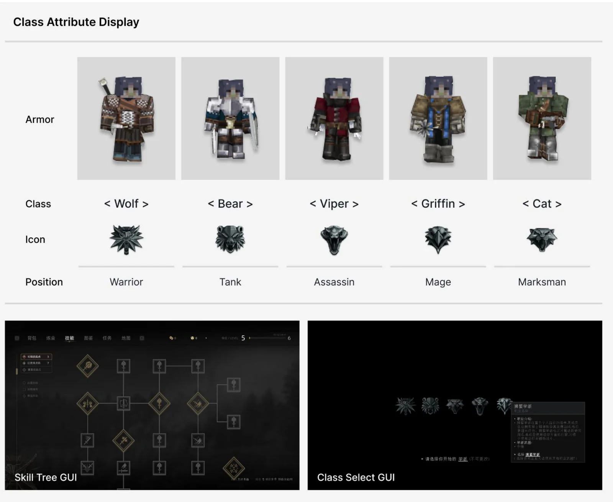
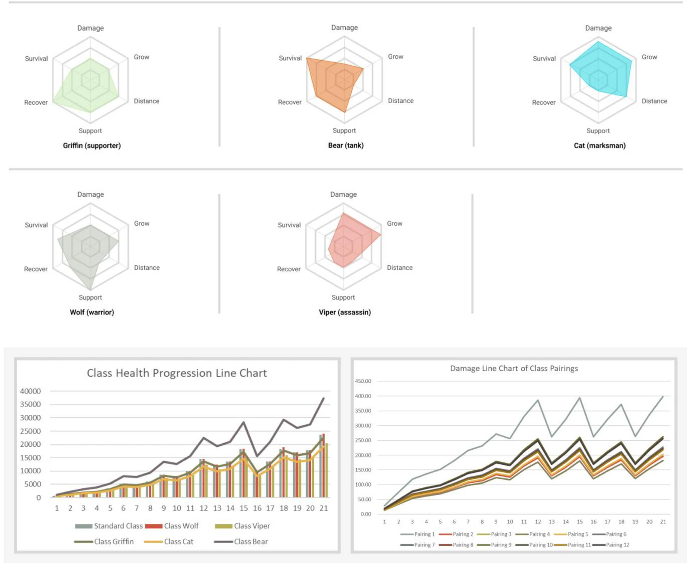
Dungeons are the main source of resources. Monster drops, dungeon and quest rewards, world chests and the shop feed three sinks — crafting, enhancement and levelling — which all end in character progression. Experience sources change by chapter, so chapter one teaches through simple tasks.
副本是主要资源来源。怪物掉落、副本和任务奖励、野外宝箱、商店产出，流向合成、强化、升级三类消耗，最终都落到角色成长上。每章的经验来源比例不同，第一章靠简单任务带玩家入门。
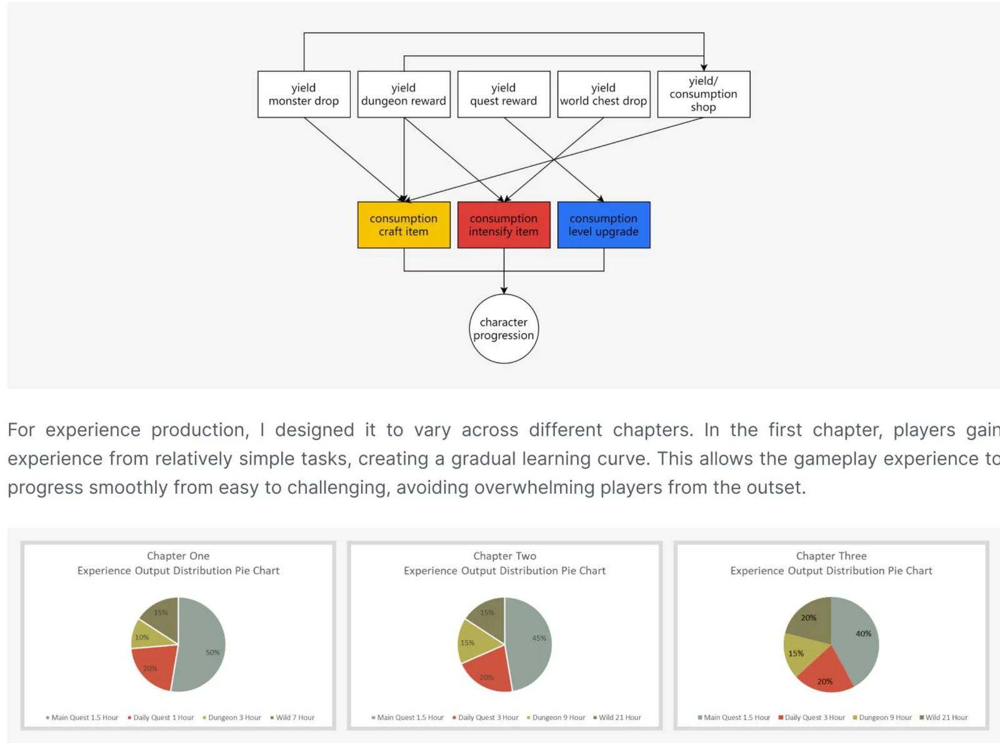
Level layouts关卡布局
Levels go from sketch to a 2.5D map marked as safe zones, combat zones and roads. One map shows the boss room from the start but blocks the way in, so players take another route to find the key. Occluders and a narrow-to-wide view signal the fights ahead; box-pushing and 2D jumping sections break up the route.
关卡从草图到 2.5D 地图，标出安全区、战斗区和道路。有一张图一开始就能看到 Boss 房，但进不去，玩家得绕另一条路拿钥匙。遮挡物和由窄到宽的视野提示前方的战斗，推箱子和 2D 跳跃段落打断路线的单调。
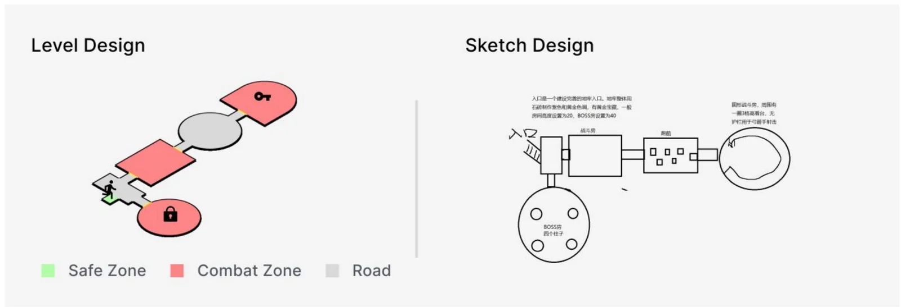
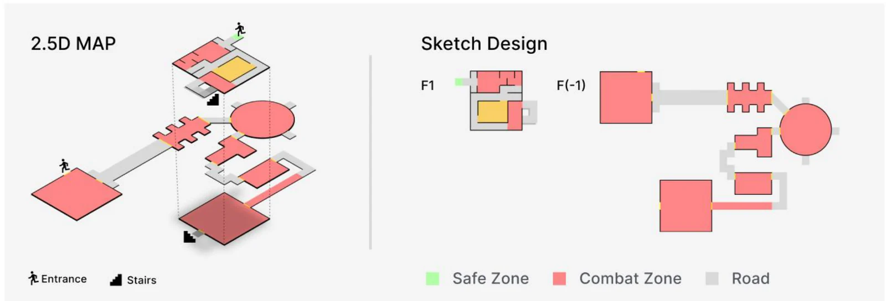
Project management项目管理
Tasks and documents were managed in Feishu and Teambition at first; the team later moved everything to Tencent Docs.
前期用飞书和 Teambition 管理任务与文档，后来统一改用腾讯文档。
Production制作
Combat feel战斗手感
Combat was analysed as five layers — attack animation, damage logic, hit effect, hit feedback and sound — and each was rebuilt.
把战斗拆成五层分析：攻击动画、伤害逻辑、受击特效、受击反馈、音效，然后逐层重做。
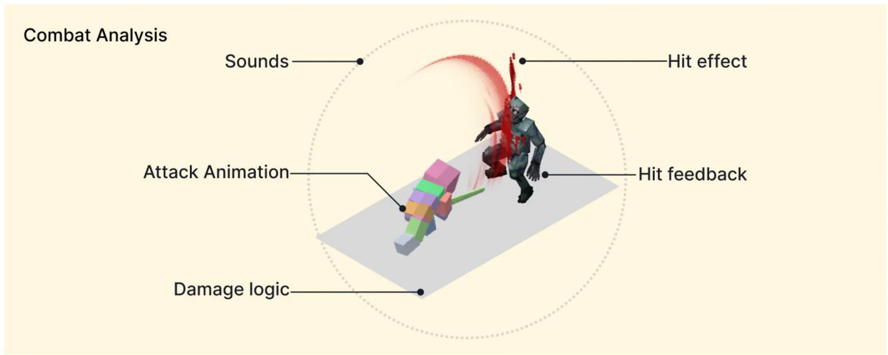
Damage resolves on a detection frame followed by a damage frame. If the target has already been hit, its own attack is cancelled, so opponents visibly stop instead of trading blows through each other.
伤害按「判定帧 → 伤害帧」结算。目标已被命中时，取消它自己的攻击，对手会明显停下，而不是互相穿模对砍。
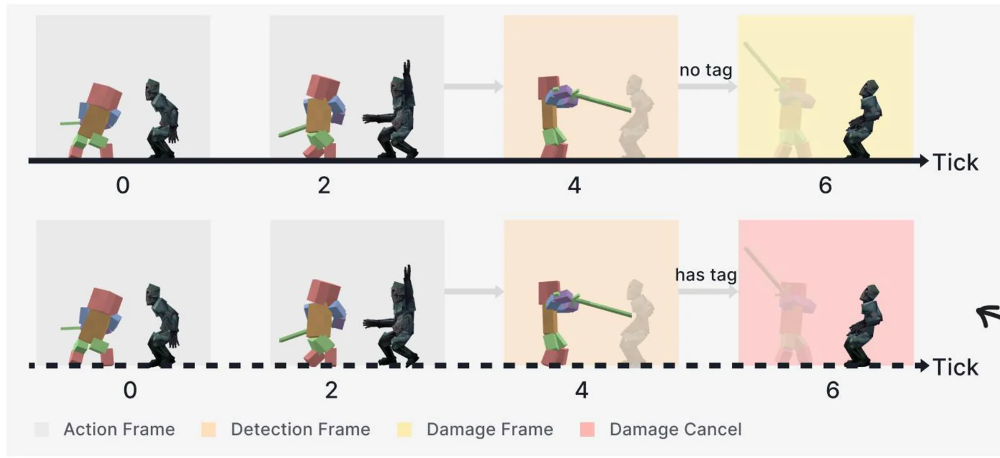
Bleed effects follow the direction of the attack, with the angle randomised inside a range.
出血特效方向跟随攻击动作，角度在一定范围内随机浮动。
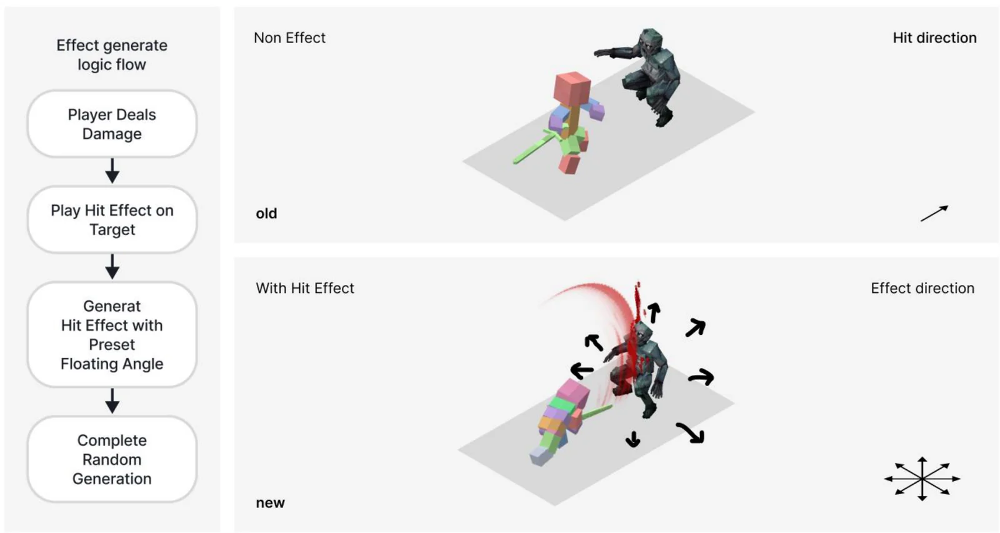
A reinstate animation between combat and standby replaced the instant snap back to idle.
在战斗和待机之间加了收招动画，替代原来瞬间切回待机。
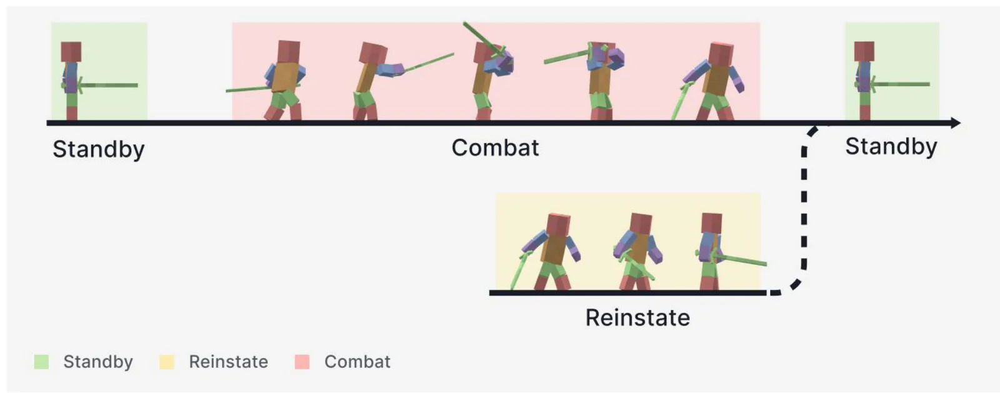
Hit-stop and camera shake when an attack connects. Sound grew from two cues (monster hurt, BGM) to four (player attack, attack hit, monster hurt, BGM).
命中时加顿帧和镜头震动。音效从两类（怪物受伤、BGM）扩到四类（玩家攻击、攻击命中、怪物受伤、BGM）。
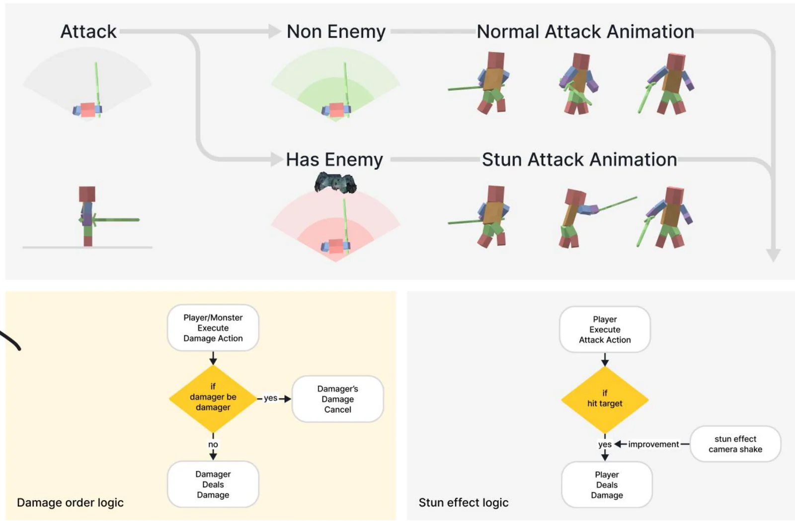
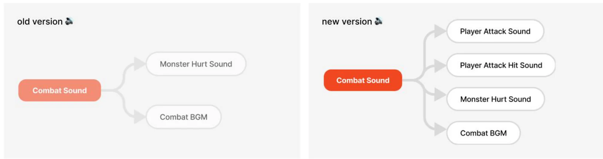
Monsters and HUD怪物与 HUD
Monsters first ran on default Minecraft behaviour and wandered without purpose. A custom state machine (patrol → goal sequence → wait / approach / cast skill) replaced it, and a maneuver state keeps distance: closing in when the player backs off, pulling back when the player closes in.
怪物最初沿用 Minecraft 原版行为，漫无目的地走。改成自定义状态机（巡逻 → 目标序列 → 等待 / 接近 / 释放技能），并加入「周旋」状态保持距离：玩家后退就逼近，玩家靠近就拉开。
The first HUD imitated other games and was unclear. It was rebuilt from what each system needs to show: consumable quick-bar, status bars, combat prompts, buffs, boss health, quest tracking and the minimap.
第一版 HUD 是模仿别的游戏做的，信息不清楚。之后按每个系统需要展示什么重做：消耗品快捷栏、状态条、战斗按键提示、Buff、Boss 血条、任务追踪和小地图。
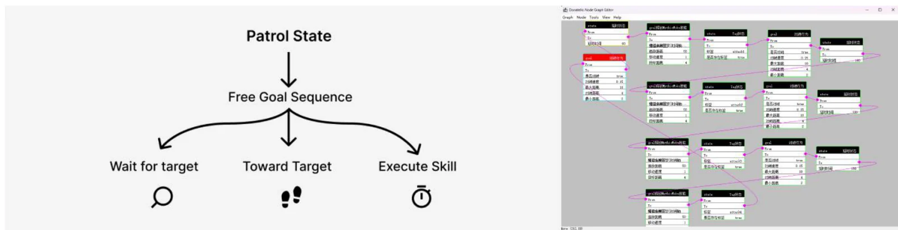
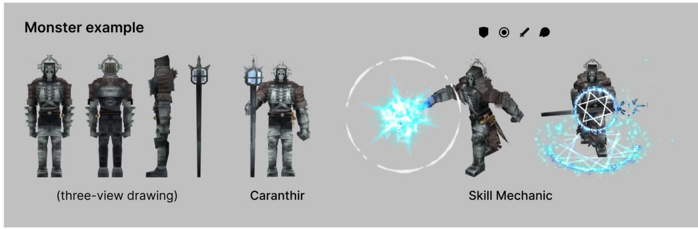
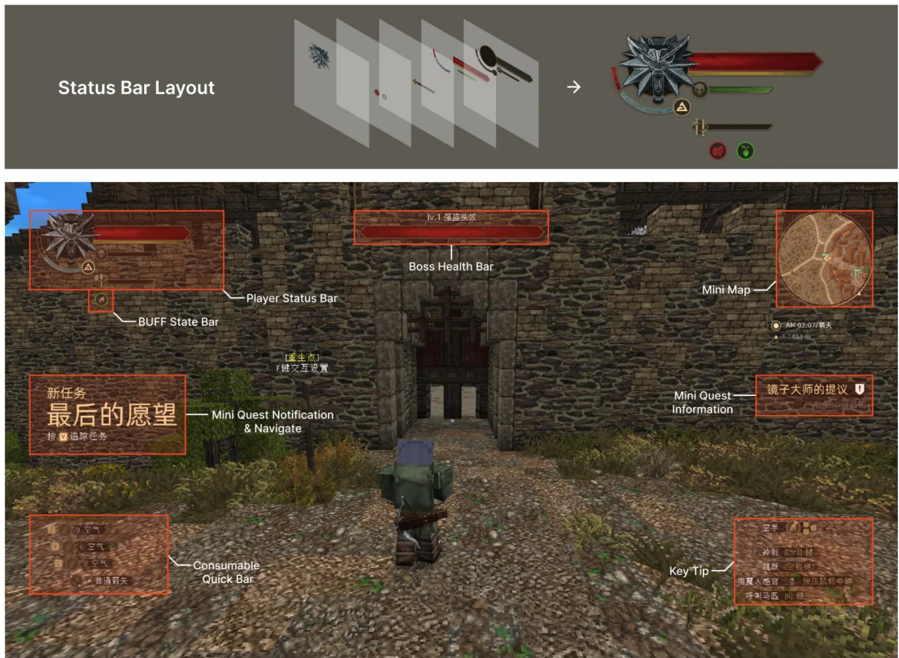
Server data and systems服务端数据与系统
Data is sorted into persistent, temporary, frequently accessed and rarely accessed. On login, player data moves from MySQL into a Redis cache; the server writes the cache back every 30 minutes and on logout, so a crash loses little.
数据分为持久、临时、高频访问、低频访问四类。玩家登录时从 MySQL 读入 Redis 缓存，服务器每 30 分钟和玩家下线时写回，服务器崩溃时损失很小。
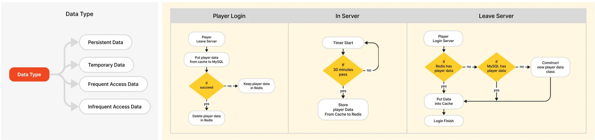
- Quests — a quest → sub-quest → goal model configured in YAML, five quest types (main, side, hunt, treasure, daily) and 30+ goal types (kill, collect, NPC, dungeon, forging, alchemy…). Only runtime fields are stored; progress uses event listeners instead of polling, saves to Redis / MySQL and resets daily.任务：「任务 → 子任务 → 目标」三层模型，YAML 配置；主线、支线、狩猎、宝藏、每日五类任务，30+ 种目标类型（击杀、收集、NPC、副本、锻造、炼金……）。只存运行时需要的字段；进度用事件监听代替轮询，存入 Redis / MySQL，每日定时重置。
- Items — a modular text-format editor for item descriptions.物品：模块化的物品描述格式编辑器。
- Social — chat and friends handle events in one place so no view misses an update.社交：聊天和好友的事件集中处理，避免某个界面漏更新。
- Also built — NPC dialogue trees, party system for world and dungeons, async dungeon loading, director-mode camera recording.其他：NPC 分支对话、大世界与副本通用的组队系统、副本异步加载、「导演模式」运镜录制。
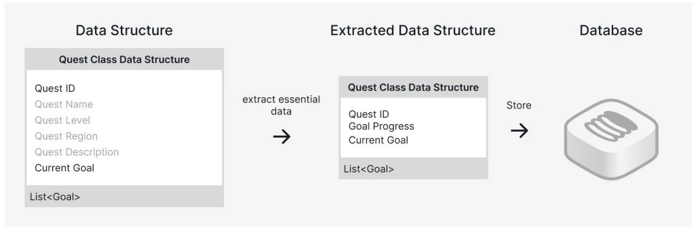
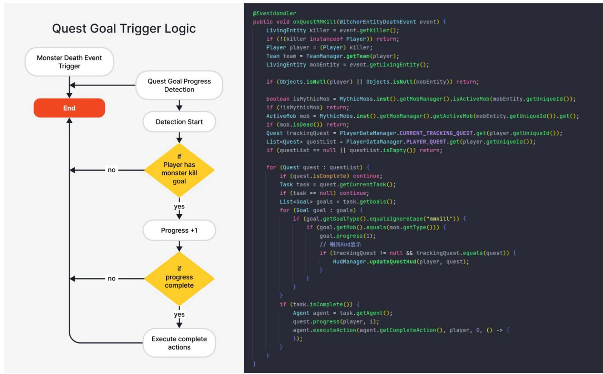
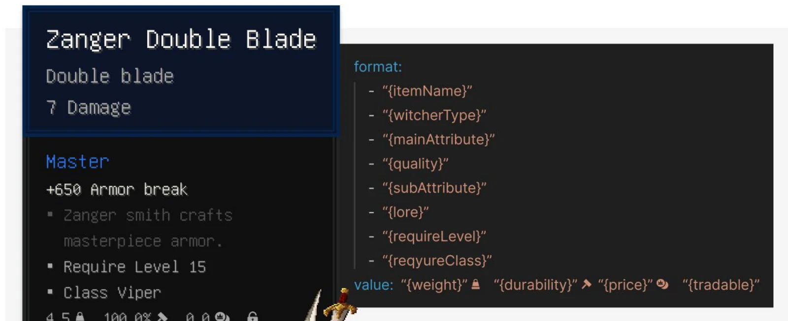
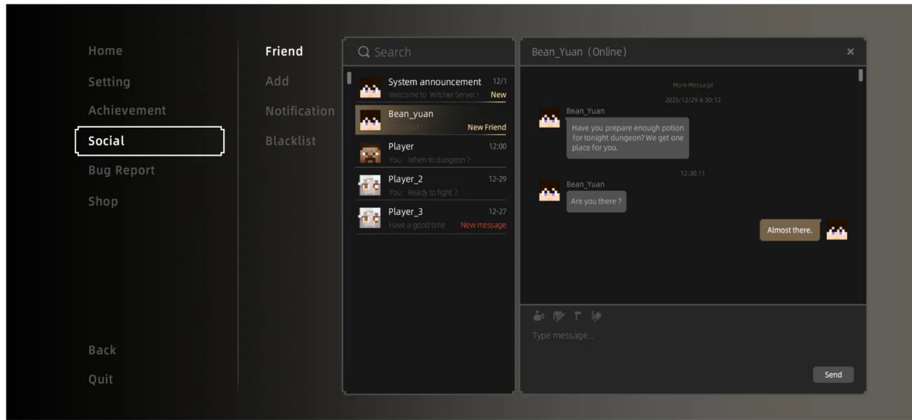
Levels, dungeons and late content关卡、副本与后期内容
A level-design tool built for customisability, stability and scalability. Dungeons run as info screen → room screen → in progress → settlement. Quest navigation draws an A* path with a guiding beam and marks the minimap.
关卡设计工具以可定制、稳定、可扩展为目标。副本流程为：信息界面 → 房间界面 → 进行中 → 结算。任务导航用 A* 生成路径，配追踪光束，并在小地图上标记目标。
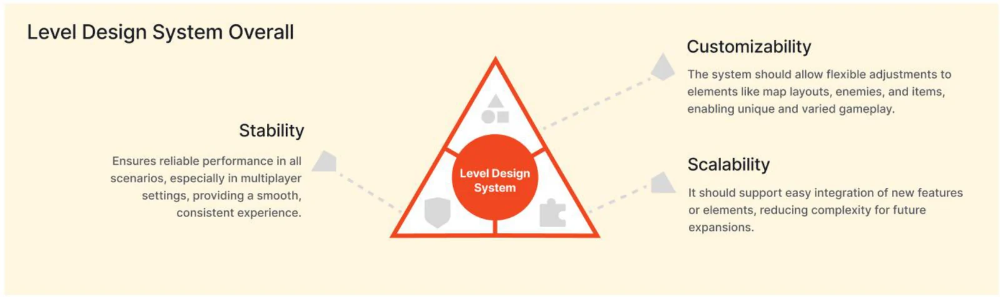
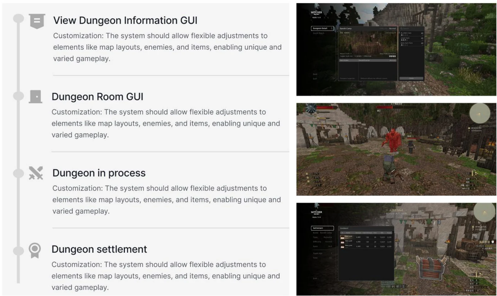
- Roguelike tower climb — random routes, reward builds and a growth loop, linked to hidden dungeons.肉鸽爬塔：随机路线、奖励构筑、成长产出闭环，并联动隐藏副本。
- Fishing — a life skill with its own output and growth loop, tied into the economy.钓鱼：独立产出与成长循环的生活技能，接入经济系统。
- Raid bosses — phase changes swap the boss skill set; skill triggers, target selection and damage resolution tuned for group play.团本 Boss：阶段切换改变技能组；技能触发、目标选择、伤害判定针对多人协作调整。
Testing & Polish测试与打磨
Three test rounds ran before launch, with about 50, 100 and then 50 players online at once. The changes below came out of testing.
上线前做了三轮测试，同时在线分别约 50、100、50 人。下面的改动都来自测试。
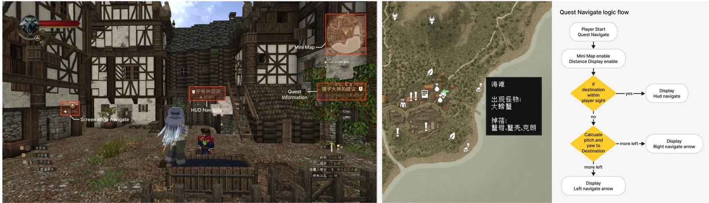
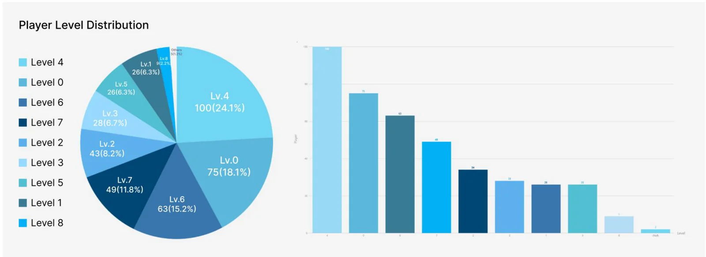
Release & Operations发布与运营
Operations started during the C-test: talking with players every day made it clear that keeping the community active is part of the game. That became a launch plan in four stages.
第一次接触运营是在 C 测期间：每天和玩家交流，意识到维持社区活跃本身就是游戏的一部分。于是做了分四个阶段的上线运营计划。
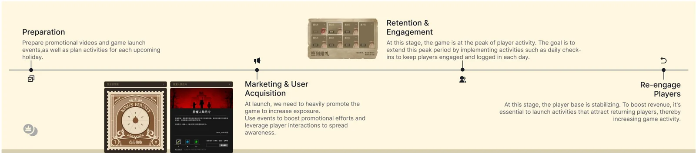
- Preparation — promo videos, launch events, activities for each upcoming holiday.准备：宣传视频、上线活动、节日活动。
- Marketing & acquisition — heavy promotion at launch, players spreading the word.宣发拉新：上线集中宣传，靠玩家互动扩散。
- Retention — daily check-ins and activities during the activity peak.留存：活跃高峰期做每日签到等活动。
- Re-engagement — events that bring returning players back as the player base settles.回流：玩家数稳定后用活动拉回老玩家。
For launch, a prize wheel gave spins for sharing the game and referral rewards paid out for bringing in new players, making players the main promotion channel.
正式上线时，分享游戏可以抽转盘，邀请新玩家达到人数给奖励，把玩家变成主要的推广渠道。
- Launch — September 2024 on our own server platform, with about 500 players online at opening; about 10,000 players registered over its lifetime.开服：2024 年 9 月在我们自己的服务器平台上线，开服同时在线约 500 人；运营期间累计注册约 10,000 人。
- Channels — Bilibili for promotion, where the gameplay PV passed 100,000 views, and QQ groups for the community, about 4,000 members in total.渠道：B 站宣发，实机 PV 播放量十几万；QQ 群运营社区，群成员共约 4000 人。
- End of service — operations stopped in September 2025.停服：2025 年 9 月停止运营。
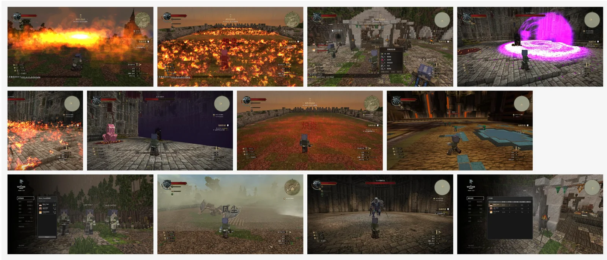
What's Next后续计划
After operations ended in September 2025, the same team started designing its next Minecraft MMORPG in May 2026, modeled on Albion Online:
2025 年 9 月停止运营后，同一团队在 2026 年 5 月开始策划下一款 Minecraft MMORPG，以《阿尔比恩 Online》为模板：
- Gear is your class — no fixed classes; weapons give active skills, armour gives passives.装备即职业：没有固定职业，武器决定主动技能，防具决定被动。
- Full-loot PvP — dying in red and black zones drops all equipped gear.全装备掉落 PVP：在红区、黑区死亡会掉光身上装备。
- Player-driven economy — nearly all gear is crafted by players; NPCs sell no equipment.玩家驱动经济：几乎所有装备由玩家生产，NPC 不卖装备。
- Guild territory wars — a weekly large-scale guild battle decides who holds resource points.公会领地战：每周一次大规模公会战决定资源点归属。
- Random dungeons — the layout is regenerated on every entry.随机地牢：每次进入布局随机生成。
The project took me into areas I had never worked in, and showed that a good game needs a united team — clear communication is how the obstacles got solved.
这个项目让我接触了很多从没做过的领域，也让我明白好游戏需要团结的团队，障碍都是靠有效沟通解决的。
Team团队
The team grew from two people to nearly fifteen over the project.
团队在项目过程中从 2 人发展到近 15 人。
- Lizhuoyuan Wan
- Zhaoyang Gong
- Xuanyu Wang
- Qianyu Zhang
- Hongyu Yang
- Guanping Peng
- Zekun Yang
- Yiyang Mao
- Zhou Dong
- Xijun Ma
- Wang Lang
- Jialong Chen
- Junxuan Li
- Xiwei Huang